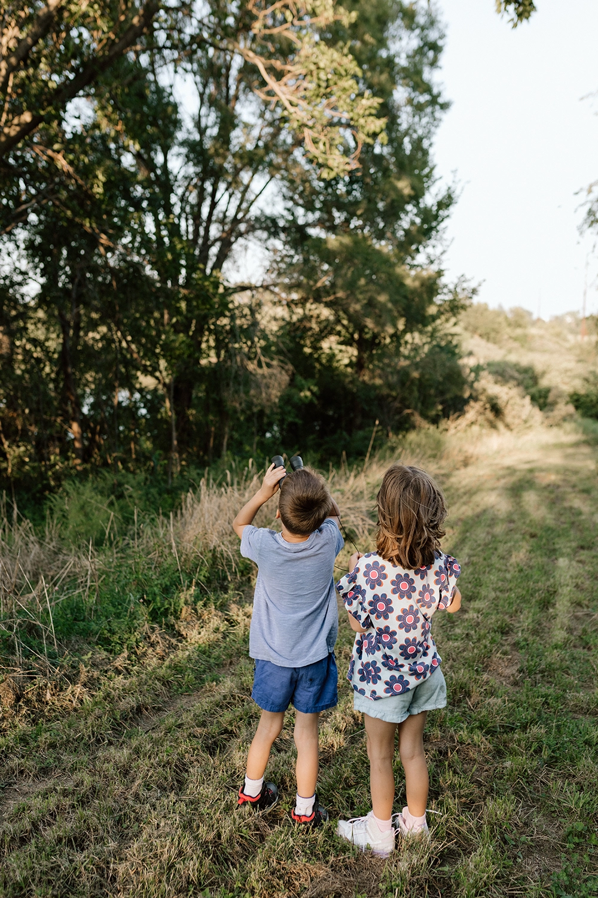

Visit · Outdoors
Middlebrook Meadow
Fifty-plus acres of native grasses, wildflowers, and quiet trails.
The Meadow
Find peace and serenity in Middlebrook Meadow, a nature preserve set aside within the development for wild things to grow.
This land could have been more homes. Instead, Middlebrook chose to leave it wild, setting aside more than 50 acres of rolling hills, native grasses, and a meandering creek so that nature stays part of everyday life here.
Walk the mowed trails through native grasses and flowers, stop by the pond to watch for wildlife, and say hello to the friendly farm animals grazing along the way near Wilson’s Orchard (coming 2027). The Meadow changes with every season, from spring green to the gold of late summer.
- 50+
- acres of nature preserve
- 1.5
- miles of walking trails

Where to start
Three trailheads
All three trails meet in the middle of the Meadow, so you can start at one trailhead and finish at another.
-
Wilson’s Trailhead
Beside Wilson’s Orchard, off 15th Avenue south of G14/Cumming Avenue.
0.35 miles to the center of the Meadow -
Great Western Trailhead
Off the Great Western Trail at S. 44th Place, just south of Town Center.
0.45 miles to the center of the Meadow -
Coolidge Trailhead
Off Coolidge Street where it meets the Great Western Trail, at the south end of the Meadow.
0.35 miles to the center of the Meadow
Along the trail
What you will see
Native grasses and flowers
Prairie grasses and wildflowers native to Iowa, changing color with every season.
The pond
A pond teeming with wildlife, and a quiet place to pause along the way.
Grazing farm animals
Coming in 2027: farm animals grazing near Wilson’s Trailhead, monitored by Wilson’s Orchard as part of their polyculture farm.
Mowed walking trails
Easy, mowed paths through the preserve, good for a morning walk or an evening stroll.


Plan your walk
The Meadow is open sunup to sundown. Start from any of the three trailheads listed above. The Meadow connects to the rest of Middlebrook by sidewalks and trails, so it is easy to pair a walk with a stop at Mayor Tom Becker Park or the town garden.
See where it is in Middlebrook
Trail guidelines
Help us care for the Meadow
To ensure its preservation and everyone’s enjoyment of Middlebrook Meadow, please adhere to the following guidelines.
- Keep pets on a leash
- Stay on the trail
- Leave no trace
- No hunting
- No camping
- No drinking
- No motorized vehicles
Those on the trail after dark or on private property will be prosecuted.

Ready to see Middlebrook for yourself?
Tell us what you are looking for and we will reach out with the next step, whether you are exploring a home, a lot, or the community itself.
Request Info